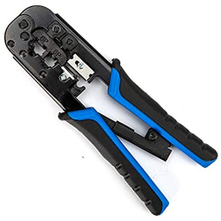

Crimpadora
Herramienta manual que se utiliza para crear conexiones seguras y permanentes entre cables y conectores. Funciona mediante la deformación (crimpado) de una o ambas partes metálicas del conector alrededor del cable, creando una unión sólida y confiable.
